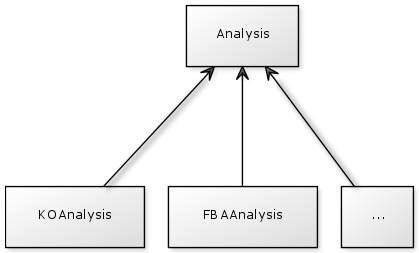

All information about the network : entities, constraints and interactions are accessible from the Bind class.
See the Javadoc for details about all classes, methods and parameters.
The first thing to do when creating a new FBA based method is to create a new class in the package parsebionet.applications.flux.flexflux
Arguments are handled by the Java class library args4j.
The class you create has to follow theses steps :
Example :
bind = new CplexBind(!f.nointInSolver);
Example :
bind.loadSbmlNetwork(f.sbmlFile, f.extended);
if (f.condFile != "") {
bind.loadConditionsFile(f.condFile);
}
if (f.intFile != "") {
bind.loadInteractionsFile(f.intFile);
}
bind.prepareSolver();
Example :
Analysis analysis = new YourAnalysis(yourArguments); AnalysisResult result = analysis.runAnalysis();
Example :
if (f.plot) {
result.plot();
}
if (!f.outName.equals("")) {
result.writeToFile(f.outName);
}
To be faster, you can just copy and paste an existing class (like FlexFluxFBA), change the arguments, the name of your method and make other potential changes.
All classes representing analysis extend the class Analysis and all analysis result classes extend the class AnalysisResult.
So you have to create two more classes :
YourAnalysis will contain all the actions that you method will make. You have to overwrite the function runAnalysis(). This method creates and returns your YourAnalysisResult object.
YourAnalysisResult contains all the data calculated by your analysis and must overwrite at least two methods :